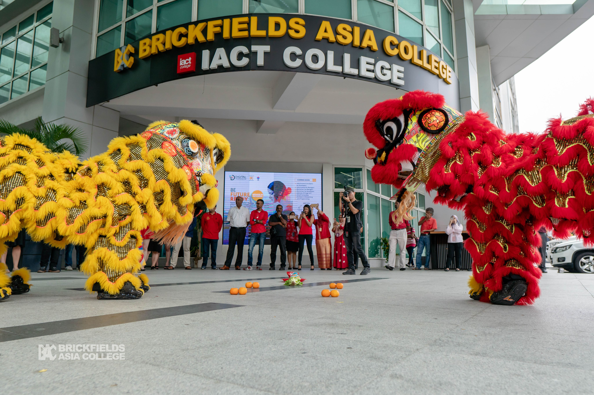
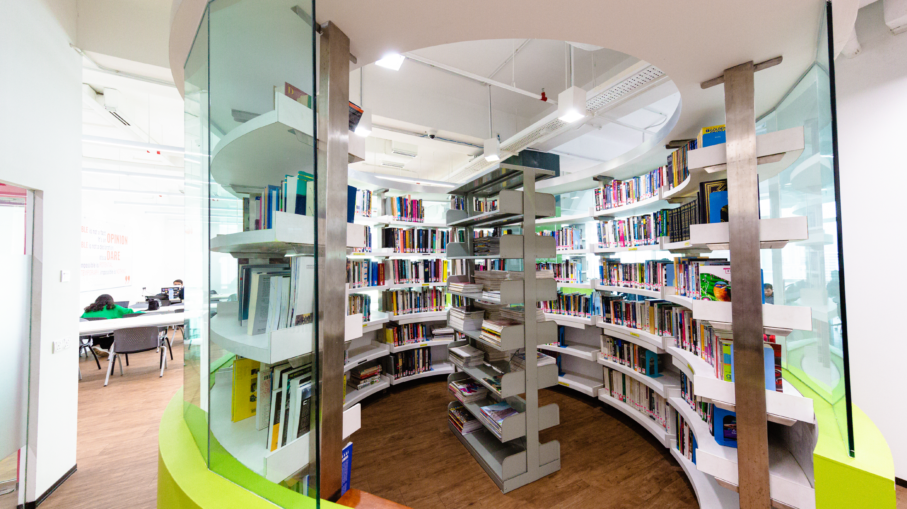
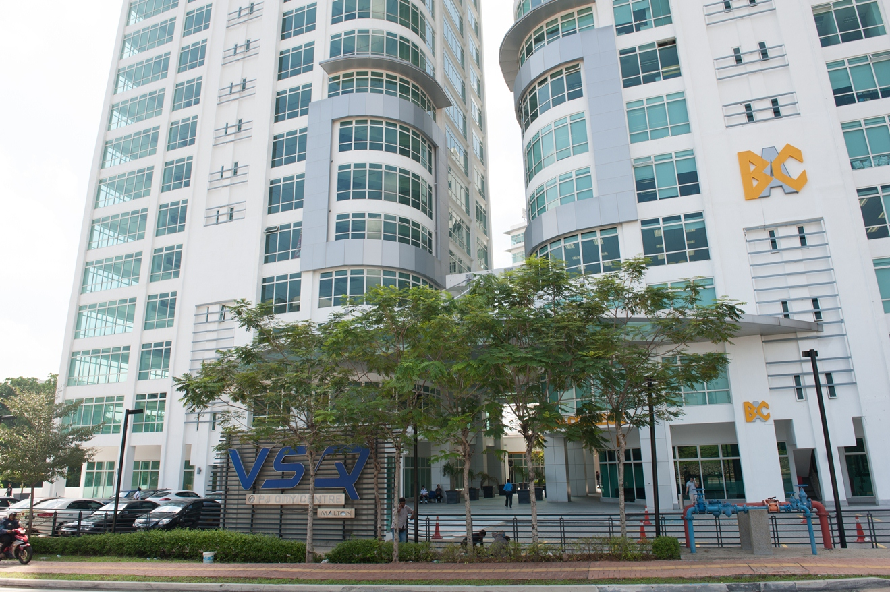

University guide for Bangladeshi applicants
Explore BAC Education Group by institution and study pathway. A BAC College law programme, a UNIMY computing degree and a Reliance hospitality programme are different choices: identify the teaching institution and awarding body before selecting an intake.
Established in 1991, Brickfields Asia College is the flagship institution of the BAC Education Group and is widely recognized as "The Nation’s No. 1 Law School." BAC has evolved from its origins in legal education into a comprehensive institution offering over 500 academic and professional programs. It is known for its strong international affiliations, particularly with top UK universities.
Operates across major hubs including the original campus in Kuala Lumpur (Brickfields) and the flagship Menara BAC in Petaling Jaya. Campuses serve as "one-stop hubs" featuring specialized moot courts, hybrid lecture halls, the ABACUS Digital Library (100,000+ resources), MonsterFit gyms, and "The Mansion" accommodation.



Founded in 2012 and joining the BAC Education Group in 2023, UNIMY is a private, AI-native technology university. It is dedicated to producing future-ready graduates through an industry-embedded curriculum. The university focuses heavily on digital technology, innovation, and career readiness, aligning its education model with the Fourth Industrial Revolution.
Housed in the Menara BAC campus in Petaling Jaya. Designed for a digital-first experience, featuring smart classrooms, industry-grade innovation labs, an Application Post-Quantum Cryptography Migration Lab, an ESG lab, and an e-sports arena.
IACT College is a premier specialist institution in creative communications. Founded in the 1970s by the Malaysian Advertisers Association (MAA) and the Association of Accredited Advertising Agents Malaysia (4As), it was built "by the industry, for the industry." Notably, it is the only college in Malaysia accredited by the International Advertising Association (IAA) in New York.
Integrated into the Menara BAC campus in Petaling Jaya. Provides industry-standard environments including broadcasting and video production studios, an Innovation Hub for creative start-ups, the Omnia Auditorium, and collaborative design spaces that mirror real-world creative agencies.
Veritas University College (VUC) is a highly innovative institution recognized as the "World's First Pay It Forward University." It champions a "Learn Different" philosophy that emphasizes a holistic, future-ready education. VUC is particularly well-regarded for its flexibility, catering heavily to working professionals and adult learners.
Based out of the central Menara BAC hub in Petaling Jaya. Known as a "green campus", it features state-of-the-art digital infrastructure for seamless online/blended learning delivery. Physical facilities include the Horizon Banquet Hall, multi-purpose seminar rooms, and start-up incubation hubs.
With roots tracing back to 1987, Reliance College is a pioneer in tourism, hospitality, and culinary arts education in Malaysia. Integrated into the BAC Education Group, the college is renowned for producing "industry-ready" graduates. It heavily emphasizes practical, real-world training and runs a unique "Earn While You Learn" (EWYL) initiative.
Operates within the BAC ecosystem, primarily utilizing the Menara BAC facilities in Petaling Jaya. The campus boasts highly specialized practical training spaces, including mock hotel rooms, state-of-the-art commercial training kitchens, and operational training restaurants.
These examples retain the stored schedule's wording. They are not a complete course catalogue or confirmation of the next open intake. Use the official programme sources below to confirm current availability.
| Programme | Schedule section | Duration | Intake in schedule | Tuition |
|---|---|---|---|---|
| Foundation in Computing & Engineering | UNIMY | 1 year | Confirm for this programme | View relevant fee section |
| Foundation in Business | BAC COLLEGE | 1 year | Confirm for this programme | View relevant fee section |
| Foundation in Media Studies | IACT COLLEGE | 1 year | Confirm for this programme | View relevant fee section |
| Foundation in Arts | VERITAS UNIVERSITY | 1 year | Confirm for this programme | View relevant fee section |
Intakes differ between institutions, programmes and study modes. Choose the exact programme in the official course catalogue and check its intake information; a group intake month does not establish availability for every course.
For a law or transfer pathway, submit your Bangladesh qualifications for the specific route and ask whether later entry to the awarding or overseas university requires a separate assessment. Admission and professional recognition are separate questions.
Prepare your qualification certificates, subject transcripts and any English-test results for assessment. Confirm the exact programme, campus, study mode, academic conditions and international application deadline together. This guide does not establish a universal HSC grade or IELTS waiver.
Plan the student visa document requirements
A scholarship or adjusted-fee entry in a schedule is not proof that every applicant qualifies. Request the named award, eligible programme and intake, application deadline and continuation requirements. Keep the approved award and final fee offer together. Read the Malaysia scholarship guide.
View BAC Education Group international tuition fees and payment notes. The separate fee chart explains the published payment periods and additional charges for financial planning.
It depends on the programme. The official group catalogue identifies different providers and partner awards, including transfer routes. Use the exact course title and awarding institution when comparing offers.
BAC Education Group includes several education institutions. This guide covers the group; the institution delivering your course and the body awarding your qualification must be identified separately.
Verified . Each figure below names its ranking edition.
BAC Education Group includes different colleges and partner degree pathways. A partner or awarding university ranking is not a ranking for BAC as a group.
“Not listed” refers to the named QS table. “Not verified” means we could not confirm a position for that edition; it does not establish that the institution is unaccredited.
Malaysia positions are calculated among the 32 institutions listed by QS under Malaysia in its World 2027 table. This is not a separate government ranking. An = sign marks a tie. Institutions in the same world-rank band share a national position range because their exact order is not published.
QS World and QS Asia use different methods. Overall university positions do not establish the ranking of a particular BBA, IT, MBA or other program.
QS World University Rankings 2027 - official results spreadsheet (v1.1) · QS World University Rankings 2027 - release corrections · QS Asia University Rankings 2026 - Malaysia
BAC Education Group has no institution entry in the published QS World University Rankings 2027 table.
Sources: QS World University Rankings 2027 - official results spreadsheet (v1.1) · QS World University Rankings 2027 - release corrections
A QS Asia University Rankings 2026 position for BAC Education Group has not been verified in our sources.
BAC Education Group has no separate Malaysia position in the QS World 2027 table because it has no institution entry listed under Malaysia. This is a position within the QS World table, not a separate government ranking or a QS Asia position.
Sources: QS World University Rankings 2027 - official results spreadsheet (v1.1) · QS World University Rankings 2027 - release corrections
QS Stars and SETARA are ratings, not numerical positions in a QS league table. A subject ranking applies to that subject, and a partner university rank belongs to the named partner. Check the institution, ranking system and edition before comparing.
Sources: QS Stars rating system